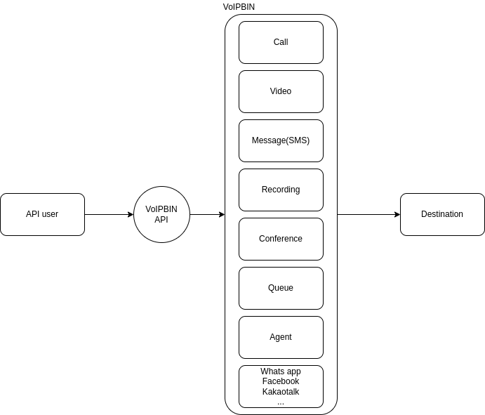

Channels
VoIPBin provides vairous types of channels.
Programmable voice
Build an engaging voice experience that you can quickly scale and modify with a wide array of customization options and resources, like our Voice actions. Then, add on features like Interactive Voice Response (IVR), recording transcriptions, and speech recognition to create an experience that you and your customers will appreciate.
See detail at here.
Account Notifications
Messaging and Voice APIs that let you keep customers in the loop about every change to their account.
Call Tracking
Accurately attribute calls, measure campaigns, and optimize customer experiences in your software.
Programmable calling
Use VoIPBin’s action flow to quickly build scalable, WebRTC/PSTN/VoIP voice application with uniform perfomance across all protocols and devices.
Global conferencing
Add multi-party calling experiences, global dial-in/out support.
Interactive voice response(IVR)
Increase customer engagement and reduce operation costs with a scalable IVR system that can respond to commands, build text-to-speech experiences in hundreds of languages, and more.
Messaging
Omnichannel messaging on a single, scalable platform. Messaging is a centralized messaging platform to engage customers across their preferred channels. The VoIPBin’s enterprise-ready APIs and scalable software are powered by an intelligent network, enabling unrivaled reliability at any scale.
Programmable Messaging API
Deliver messages to customers across preferred channels with an API for one-way, transactional messaging.
One API for transactional SMS, MMS, and Line messaging.. Build messaging solutions for alerts and notifications, promotions, marketing messages, and more.
See detail at here.
Conversations API
Support customers at critical moments on the channels they prefer with scalable, multiparty conversations.
A single API for in-app SMS, MMS, Line. Build conversational messaging solutions for customer care, conversational commerce, and more.
See detail at here.
Video
Build memorable video experiences. Embed customized video experiences into your applications at scale with VoIPBin Video.